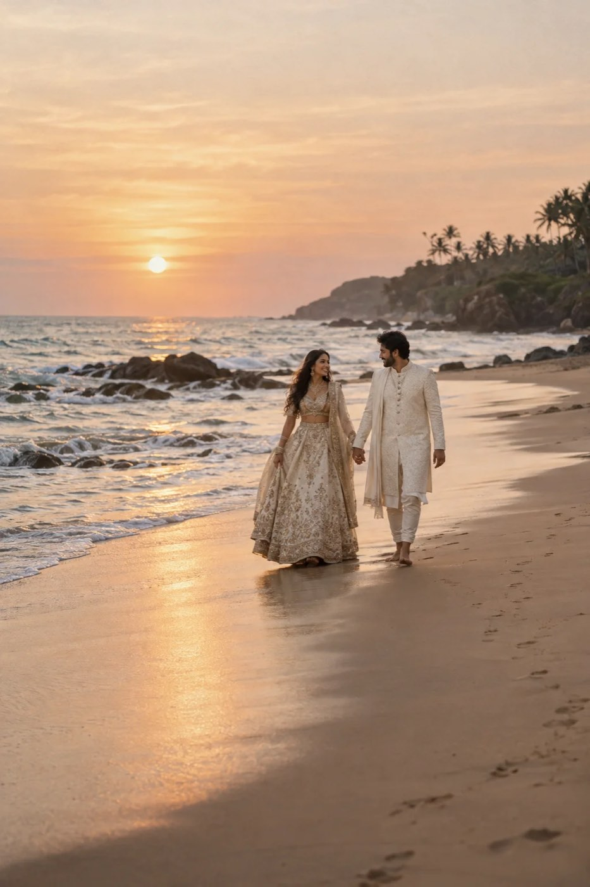
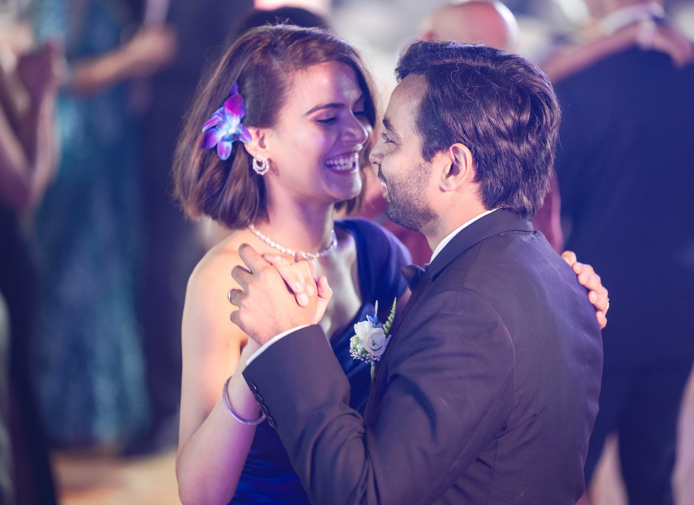
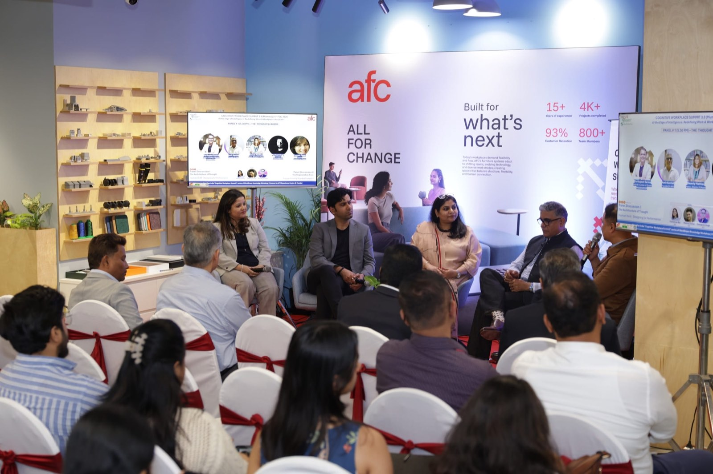
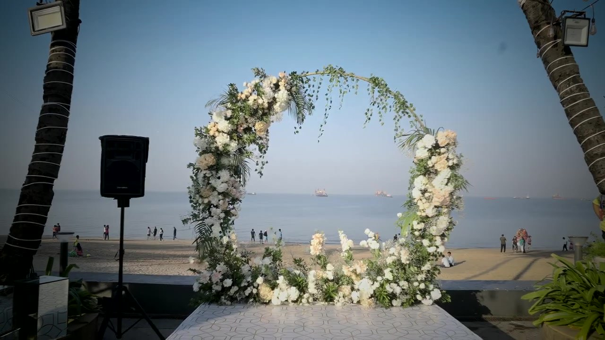
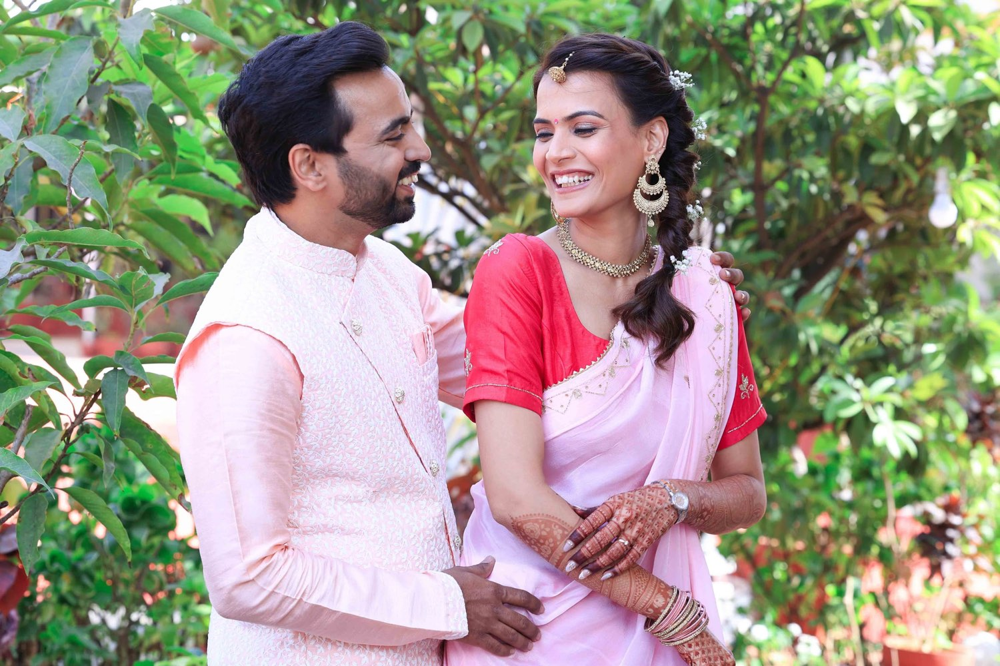
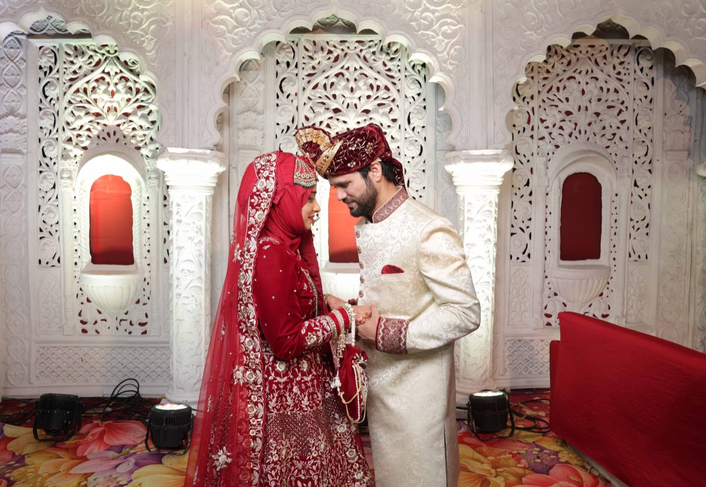

<title>Sands & Vows Design Book</title>
<meta name="description" content="Website design direction, prototypes and design system for Sands & Vows, Goa.">
<meta name="robots" content="noindex, nofollow">
<link rel="preconnect" href="https://fonts.googleapis.com"><link rel="preconnect" href="https://fonts.gstatic.com" crossorigin>
<link rel="stylesheet" href="https://fonts.googleapis.com/css2?family=Cormorant+Garamond:ital,wght@0,400;0,500;1,400;1,500&family=Figtree:wght@400;500;600&display=swap">
<link rel="stylesheet" href="assets/sv.css">
<style>
  /* Design book: a single committed look (shell by day, night for emphasis), built from the site's own tokens. */
  :root { color-scheme: light; }
  body { background: var(--shell); color: var(--ink); }
  .book-nav { position: sticky; top: env(safe-area-inset-top, 0px); z-index: 30; background: rgba(242,236,225,.95); backdrop-filter: blur(10px); -webkit-backdrop-filter: blur(10px); border-bottom: 1px solid var(--line); }
  .book-nav .wrap { display: flex; align-items: center; gap: 24px; min-height: 60px; }
  .book-nav .logo b { font-size: 22px; }
  .book-nav nav { display: flex; gap: 18px; overflow-x: auto; font-size: 13.5px; font-weight: 500; margin-left: auto; scrollbar-width: none; }
  .book-nav nav a { white-space: nowrap; padding-block: 8px; color: var(--stone); }
  .book-nav nav a:hover { color: var(--ink); }
  .cover { position: relative; min-height: min(86svh, 860px); display: flex; align-items: flex-end; color: #fbf6ee; background: var(--night); overflow: hidden; }
  .cover img { position: absolute; inset: 0; width: 100%; height: 100%; object-fit: cover; opacity: .78; }
  .cover::after { content: ""; position: absolute; inset: 0; background: linear-gradient(180deg, rgba(20,18,15,.2), rgba(20,18,15,.82)); }
  .cover .wrap { position: relative; z-index: 2; padding-block: 64px; display: grid; gap: 22px; }
  .sec-h { display: grid; grid-template-columns: 90px minmax(0, 1fr); gap: 16px; align-items: baseline; margin-bottom: 48px; }
  .sec-h .l { font-family: var(--serif); font-size: 44px; font-style: italic; color: var(--laterite); line-height: 1; }
  .g-night .sec-h .l { color: var(--laterite-lt); }
  .prose { max-width: 66ch; display: grid; gap: 18px; font-size: 17px; align-content: start; }
  .prose b { font-weight: 600; }
  .two { display: grid; grid-template-columns: minmax(0,1fr) minmax(0,1fr); gap: 48px; }
  .three { display: grid; grid-template-columns: repeat(3, minmax(0,1fr)); gap: 32px; }
  .k-list { border-top: 1px solid var(--line); }
  .k-list > div { display: grid; grid-template-columns: 180px minmax(0, 1fr); gap: 20px; padding: 18px 0; border-bottom: 1px solid var(--line); }
  .k-list dt { font-size: 12px; letter-spacing: .14em; text-transform: uppercase; color: var(--stone); font-weight: 600; padding-top: 3px; }
  .k-list dd { margin: 0; }
  .g-night .k-list, .g-night .k-list > div { border-color: var(--line-dk); }
  .g-night .k-list dt { color: var(--stone-lt); }
  /* palette */
  .swatches { display: grid; grid-template-columns: repeat(6, minmax(0,1fr)); gap: 12px; }
  .sw { display: grid; gap: 8px; font-size: 13px; }
  .sw i { display: block; aspect-ratio: 1 / 1.15; border: 1px solid rgba(27,25,22,.08); }
  .sw b { font-weight: 600; font-size: 14px; } .sw span { color: var(--stone); font-variant-numeric: tabular-nums; }
  .eco { display: grid; grid-template-columns: repeat(3, minmax(0,1fr)); gap: 12px; }
  .eco > div { padding: 22px; display: grid; gap: 14px; align-content: start; min-height: 220px; }
  .eco .chips-row { display: flex; gap: 6px; }
  .eco .chips-row i { width: 30px; height: 30px; border-radius: 50%; border: 1px solid rgba(0,0,0,.08); }
  .spec { display: grid; gap: 22px; border-top: 1px solid var(--line); padding-top: 24px; }
  .spec-row { display: grid; grid-template-columns: 160px minmax(0,1fr); gap: 20px; align-items: baseline; }
  .spec-row small { font-size: 12px; color: var(--stone); font-variant-numeric: tabular-nums; }
  /* pages */
  .pages { display: grid; grid-template-columns: repeat(3, minmax(0,1fr)); gap: 40px 24px; }
  .pcard { display: grid; gap: 12px; align-content: start; }
  .pcard .media { aspect-ratio: 16 / 10; }
  .pcard h3 { font-family: var(--serif); font-size: 28px; font-weight: 500; line-height: 1.05; }
  .pcard p { font-size: 15px; color: var(--stone); }
  .pcard:hover h3 { color: var(--laterite); }
  .pcard:hover img { transform: scale(1.03); }
  .pcard .open { font-size: 13px; font-weight: 600; }
  .sitemap { display: grid; grid-template-columns: repeat(4, minmax(0,1fr)); gap: 28px; font-size: 15px; }
  .sitemap h4 { font-family: var(--serif); font-size: 22px; font-weight: 500; margin-bottom: 10px; }
  .sitemap li { padding: 5px 0; border-bottom: 1px solid var(--line-dk); display: flex; justify-content: space-between; gap: 10px; }
  .sitemap li code { font-size: 12px; color: var(--stone-lt); font-family: ui-monospace, Menlo, monospace; white-space: nowrap; overflow: hidden; text-overflow: ellipsis; }
  /* phones */
  .phones { display: flex; gap: 40px; overflow-x: auto; padding: 8px 4px 24px; scroll-snap-type: x mandatory; }
  .ph { flex: none; display: grid; gap: 14px; scroll-snap-align: start; }
  .ph .frame { width: 318px; height: 660px; border-radius: 46px; padding: 11px; background: #0c0b0a; box-shadow: 0 30px 70px -35px rgba(0,0,0,.6); }
  .ph .frame .clip { width: 296px; height: 638px; border-radius: 36px; overflow: hidden; position: relative; background: var(--shell); }
  .ph iframe { width: 390px; height: 840px; border: 0; transform: scale(.759); transform-origin: 0 0; position: absolute; top: 0; left: 0; }
  .ph b { font-family: var(--serif); font-size: 22px; font-weight: 500; }
  .ph span { font-size: 14px; color: var(--stone-lt); max-width: 36ch; }
  .patterns { display: grid; grid-template-columns: repeat(3, minmax(0,1fr)); gap: 28px; margin-top: 56px; }
  .patterns h4 { font-family: var(--serif); font-size: 24px; font-weight: 500; margin-bottom: 6px; }
  .patterns p { font-size: 15px; color: var(--stone-lt); }
  /* system */
  .sys { display: grid; grid-template-columns: 220px minmax(0,1fr); gap: 32px; padding-block: 36px; border-top: 1px solid var(--line); }
  .sys > h3 { font-family: var(--serif); font-size: 28px; font-weight: 500; line-height: 1.05; }
  .sys > h3 small { display: block; font-family: var(--sans); font-size: 13px; color: var(--stone); font-weight: 400; margin-top: 8px; line-height: 1.5; }
  .demo { display: flex; flex-wrap: wrap; gap: 20px 28px; align-items: center; }
  .demo .lab { font-size: 11px; letter-spacing: .12em; text-transform: uppercase; color: var(--stone); display: block; margin-top: 8px; text-align: center; }
  .btn.is-hover { background: var(--laterite-dk); } .btn.is-hover .arr { transform: translateX(4px); }
  .btn.is-press { transform: scale(.98); background: var(--laterite-dk); }
  .input.is-focus { border-bottom: 2px solid var(--laterite); padding-bottom: 13px; }
  .demo-dark { background: var(--night); color: var(--shell); padding: 28px; }
  .tokens { width: 100%; border-collapse: collapse; font-size: 14px; }
  .tokens th, .tokens td { text-align: left; padding: 10px 12px 10px 0; border-bottom: 1px solid var(--line); vertical-align: top; }
  .tokens th { font-size: 11px; letter-spacing: .12em; text-transform: uppercase; color: var(--stone); font-weight: 600; }
  .tokens td:first-child { font-family: ui-monospace, Menlo, monospace; font-size: 13px; white-space: nowrap; }
  .tbl { overflow-x: auto; }
  .spacer i { display: inline-block; background: var(--amber); height: 14px; vertical-align: middle; }
  .grid-demo { display: grid; grid-template-columns: repeat(12, 1fr); gap: 8px; height: 60px; }
  .grid-demo i { background: rgba(165,72,42,.14); }
  /* conversion */
  .journey { display: grid; grid-template-columns: repeat(4, minmax(0,1fr)); gap: 0; border-top: 1px solid var(--line-dk); }
  .journey > div { padding: 24px 22px 24px 0; display: grid; gap: 10px; align-content: start; }
  .journey > div + div { padding-left: 22px; border-left: 1px solid var(--line-dk); }
  .journey .t { font-family: var(--serif); font-size: 52px; line-height: .9; color: var(--amber); font-variant-numeric: lining-nums; }
  .journey q { font-family: var(--serif); font-size: 24px; font-style: italic; quotes: "\201C" "\201D"; }
  .journey p { font-size: 15px; color: var(--stone-lt); }
  .flow { display: flex; flex-wrap: wrap; gap: 10px; align-items: center; font-size: 14.5px; }
  .flow span { padding: 10px 14px; border: 1px solid var(--line); }
  .flow span.hot { background: var(--laterite); color: #fbf6ee; border-color: var(--laterite); }
  .recs { counter-reset: r; display: grid; gap: 0; border-top: 1px solid var(--line); }
  .recs li { counter-increment: r; display: grid; grid-template-columns: 56px minmax(0, 1fr); gap: 16px; padding: 22px 0; border-bottom: 1px solid var(--line); }
  .recs li::before { content: counter(r, decimal-leading-zero); font-family: var(--serif); font-style: italic; font-size: 24px; color: var(--laterite); }
  .recs h4 { font-family: var(--serif); font-size: 24px; font-weight: 500; line-height: 1.15; margin-bottom: 6px; }
  .recs p { font-size: 15.5px; color: var(--stone); max-width: 72ch; }
  .note { background: var(--shell-2); padding: 22px 24px; font-size: 15px; display: grid; gap: 8px; }
  .note b { font-weight: 600; }
  .ifr { width: 100%; }
  @media (max-width: 900px) {
    .two, .three, .pages, .patterns, .journey, .eco { grid-template-columns: 1fr; }
    .journey > div + div { padding-left: 0; border-left: 0; border-top: 1px solid var(--line-dk); }
    .swatches { grid-template-columns: repeat(3, minmax(0,1fr)); }
    .sitemap { grid-template-columns: 1fr 1fr; }
    .sys { grid-template-columns: 1fr; gap: 18px; }
    .sec-h { grid-template-columns: 1fr; gap: 4px; }
    .k-list > div { grid-template-columns: 1fr; gap: 4px; }
    .spec-row { grid-template-columns: 1fr; gap: 2px; }
    .book-nav .logo { display: none; }
    .book-nav nav { margin-left: 0; }
  }
</style>

<header class="book-nav">
  <div class="wrap">
    <span class="logo"><b>Sands <em>&amp;</em> Vows</b></span>
    <nav aria-label="Design book sections">
      <a href="#a">A · Direction</a><a href="#b">B · Language</a><a href="#c">C–D · Pages</a><a href="#e">E · Mobile</a>
      <a href="#f">F · System</a><a href="#g">G · Interaction</a><a href="#h">H · Conversion</a><a href="#i">I · Recommendations</a>
    </nav>
  </div>
</header>

<section class="cover">
  
  <div class="wrap">
    <span class="eyebrow" style="color:#f1e2c8">Website design · v1 · 29 September 2026</span>
    <h1 class="display" style="max-width:13ch">Sands &amp; Vows, <em>first light to last dance.</em></h1>
    <p class="lead" style="color:rgba(251,246,238,.88)">Creative direction, a clickable seven-page prototype and the design system for a Goa photography and film brand in the PK Photography family.</p>
    <div class="row" style="gap:12px 28px"><a class="btn" href="home.html">Open the homepage <span class="arr">→</span></a><a class="link" style="color:#fbf6ee" href="#c">See all pages <span class="arr">→</span></a></div>
  </div>
</section>

<!-- A ------------------------------------------------------------ -->
<section id="a" class="section g-shell">
  <div class="wrap">
    <div class="sec-h"><span class="l">A</span><h2 class="h2">Creative direction</h2></div>
    <div class="two">
      <div class="prose">
        <p style="font-family:var(--serif);font-size:clamp(24px,1.2rem+1vw,32px);line-height:1.3">Sands &amp; Vows is designed as a Goan day. The site opens in sunlit shell-white, warms through sand and laterite as you scroll, and ends in the ink-dark of a reception night, so the visitor feels the arc of a celebration before reading a word.</p>
        <p>Photography carries almost all of the colour. The interface stays quiet: one serif for feeling, one sans for doing, hairlines instead of boxes, and a single copper action that means "Book us" everywhere.</p>
        <p>Local knowledge is shown, not claimed. Every image carries a <b>place stamp</b> (beach, coordinates, time of day), the Goa section is a coastline rather than a directory, and the enquiry form tells you when golden hour falls on your date. That is the difference between a studio that visits Goa and one that lives there.</p>
      </div>
      <div class="stack">
        <div class="media r-4x5"></div>
        <p class="stamp" style="color:var(--stone)">Place stamp · Ashwem <i>15.65° N</i> 6:04 pm</p>
      </div>
    </div>
  </div>
</section>

<!-- B ------------------------------------------------------------ -->
<section id="b" class="section g-sand">
  <div class="wrap">
    <div class="sec-h"><span class="l">B</span><h2 class="h2">Mood and design language</h2></div>

    <h3 class="h3" style="margin-bottom:20px">Colour: shared roots, a Goan accent</h3>
    <p class="muted body" style="margin-bottom:28px">I sampled both live sites. PK Photography uses warm ivory <span class="num">#EEEAE1</span>, ink <span class="num">#161514</span>, deep olive <span class="num">#242D23</span> and an orange accent <span class="num">#FF5B22</span>. PIK Connect uses ivory <span class="num">#F4F1EA</span> with palm greens <span class="num">#5F6B52</span> / <span class="num">#242D23</span>. Both set Cormorant Garamond with Inter. Sands &amp; Vows keeps the ivory, ink and olive so the family is obvious, and replaces the bright orange with copper laterite, the stone of Goan walls and cliffs, and builds every accent from that one warm family.</p>
    <div class="eco" style="margin-bottom:40px">
      <div style="background:#eeeae1;color:#161514"><span class="eyebrow">PK Photography</span><p style="font-family:var(--serif);font-size:28px;line-height:1.1">The studio. <em>Mumbai &amp; Goa.</em></p><div class="chips-row"><i style="background:#eeeae1"></i><i style="background:#161514"></i><i style="background:#242d23"></i><i style="background:#98a389"></i><i style="background:#ff5b22"></i></div></div>
      <div style="background:#f4f1ea;color:#1c211a"><span class="eyebrow">PIK Connect</span><p style="font-family:var(--serif);font-size:28px;line-height:1.1">The gallery. <em>Found in an instant.</em></p><div class="chips-row"><i style="background:#f4f1ea"></i><i style="background:#242d23"></i><i style="background:#5f6b52"></i><i style="background:#e3e7da"></i><i style="background:#101828"></i></div></div>
      <div style="background:var(--night);color:var(--shell)"><span class="eyebrow" style="color:var(--sand)">Sands &amp; Vows</span><p style="font-family:var(--serif);font-size:28px;line-height:1.1">The Goa studio. <em>First light to last dance.</em></p><div class="chips-row"><i style="background:var(--shell)"></i><i style="background:var(--sand)"></i><i style="background:var(--laterite)"></i><i style="background:var(--amber)"></i><i style="background:var(--palm)"></i><i style="background:var(--sea)"></i></div></div>
    </div>
    <div class="swatches">
      <div class="sw"><i style="background:var(--shell)"></i><b>Shell</b><span>#F2ECE1 · first light, page ground</span></div>
      <div class="sw"><i style="background:var(--shell-2)"></i><b>Sand wash</b><span>#E9E0D0 · alternate sections</span></div>
      <div class="sw"><i style="background:var(--sand)"></i><b>Sand</b><span>#D9C6A5 · text and lines on night</span></div>
      <div class="sw"><i style="background:var(--stone)"></i><b>Warm stone</b><span>#7D7264 · secondary text</span></div>
      <div class="sw"><i style="background:var(--ink)"></i><b>Ink</b><span>#1B1916 · body text</span></div>
      <div class="sw"><i style="background:var(--night)"></i><b>Night</b><span>#14120F · films, footer</span></div>
      <div class="sw"><i style="background:var(--laterite)"></i><b>Copper laterite</b><span>#9C5A2E · the one action colour (Book us)</span></div>
      <div class="sw"><i style="background:var(--amber)"></i><b>Sunset amber</b><span>#C68A3A · golden-hour highlights, focus ring</span></div>
      <div class="sw"><i style="background:var(--palm)"></i><b>Umber</b><span>#3A2D22 · corporate grounds, WhatsApp button</span></div>
      <div class="sw"><i style="background:var(--sea)"></i><b>Clay</b><span>#B0704F · couples tag</span></div>
      <div class="sw"><i style="background:var(--honey)"></i><b>Honey</b><span>#D6A860 · celebrations tag</span></div>
      <div class="sw"><i style="background:#6e5438"></i><b>Bronze</b><span>#6E5438 · corporate tag</span></div>
    </div>
    <p class="caption" style="margin-top:18px">The palette is analogous: every accent sits between copper and sand on the colour wheel, so Book us, the umber WhatsApp button, tags and highlights always agree. Category dots: weddings copper, pre-weddings amber, couples clay, corporate bronze, celebrations honey. No greens or blues in the interface; the sea and palms come from the photographs.</p>

    <div class="two" style="margin-top:72px">
      <div>
        <h3 class="h3" style="margin-bottom:20px">Typography</h3>
        <div class="spec">
          <div class="spec-row"><small>Display · Cormorant Garamond 400 · 48–112px · −2%</small><p class="display" style="font-size:clamp(44px,5vw,72px)">Come to Goa. <em>Leave with the story.</em></p></div>
          <div class="spec-row"><small>H2 · 40–72px</small><p class="h2" style="font-size:40px">We know Goa. <em>We live here.</em></p></div>
          <div class="spec-row"><small>Lead · Figtree 400 · 18–21px</small><p class="lead">Plan from your city. We handle the Goa part.</p></div>
          <div class="spec-row"><small>Body · Figtree 400 · 17px / 1.6</small><p>Candid and traditional photography, a cinematic film and drone over the shoreline.</p></div>
          <div class="spec-row"><small>Label · Figtree 600 · 12px · +16%</small><p class="eyebrow">Destination weddings</p></div>
          <div class="spec-row"><small>Place stamp · 12px · tabular</small><p class="stamp">Chapora fort <i>15.60° N</i> 6:02 pm</p></div>
        </div>
      </div>
      <div class="prose" style="align-content:start">
        <h3 class="h3">Why this pairing</h3>
        <p><b>Cormorant Garamond</b> is the family face across PK Photography and PIK Connect, so Sands &amp; Vows keeps it for headlines and emotional moments. Italic is reserved for the second half of a line: the place, the feeling, the pay-off.</p>
        <p><b>Figtree</b> replaces Inter for UI and body. It is as legible on small phones but rounder and warmer, which moves the sub-brand from studio towards travel. Serif never appears in buttons, forms or navigation.</p>
        <h3 class="h3" style="margin-top:20px">Imagery</h3>
        <p>Mix edge-to-edge frames with carefully framed editorial ones, landscape with portrait, colour with the occasional black-and-white. No rounded photo cards and no drop shadows. Images break the grid on purpose (offset portraits, overlapping collage). Every image gets a place stamp; every mobile crop is chosen separately.</p>
        <h3 class="h3" style="margin-top:20px">Motion and space</h3>
        <p>200ms for feedback, 400ms for state changes, 600–900ms for image reveals, all on a soft ease-out. Sections breathe at 72–160px. Nothing waits for animation to be readable.</p>
      </div>
    </div>
  </div>
</section>

<!-- C / D ------------------------------------------------------------ -->
<section id="c" class="section g-shell">
  <div class="wrap">
    <div class="sec-h"><span class="l">C–D</span><div class="stack"><h2 class="h2">Homepage and key pages</h2><p class="muted body">Seven working pages, responsive and clickable. Open each one; the header, menu, mobile action bar and footer behave as they would on the live site.</p></div></div>
    <div class="pages">
      <a class="pcard hover-zoom" href="home.html"><div class="media"></div><span class="tag wedding">C · Homepage</span><h3>Home, header to footer</h3><p>Hero crossfade, Goa signal, editorial experiences, sticky wedding chapters, pre-wedding, couples, corporate, the Goa coastline, stories, films, testimonials, process, PIK Connect, pricing, about, availability.</p><span class="open">Open page →</span></a>
      <a class="pcard hover-zoom" href="weddings.html"><div class="media"></div><span class="tag wedding">D · Weddings</span><h3>Destination weddings</h3><p>Day-by-day timeline, coverage, four kinds of Goa wedding, destination logistics, film, packages, FAQ.</p><span class="open">Open page →</span></a>
      <a class="pcard hover-zoom" href="pre-wedding.html"><div class="media"></div><span class="tag prewed">D · Pre-wedding</span><h3>Choose your Goa</h3><p>An interactive mood picker (beaches, cliffs, Fontainhas, greenery, villas, monsoon), the planning list and a real shoot-day timeline.</p><span class="open">Open page →</span></a>
      <a class="pcard hover-zoom" href="couples.html"><div class="media"></div><span class="tag couple">D · Couples</span><h3>One Goa evening</h3><p>Lighter, type-led page on shell white. Choose 60, 90 or 120 minutes. Private proposal planning.</p><span class="open">Open page →</span></a>
      <a class="pcard hover-zoom" href="corporate.html"><div class="media"></div><span class="tag corporate">D · Corporate</span><h3>Offsites and events</h3><p>Umber professional register: formats, turnaround-led deliverables, procurement-friendly details.</p><span class="open">Open page →</span></a>
      <a class="pcard hover-zoom" href="story.html"><div class="media"></div><span class="tag wedding">D · Story</span><h3>A beach wedding in Morjim</h3><p>Immersive story: meta bar, chapters by day, pull quote, film, credits and the next story.</p><span class="open">Open page →</span></a>
      <a class="pcard hover-zoom" href="availability.html"><div class="media"></div><span class="tag couple">D · Contact</span><h3>Book us</h3><p>Three short steps that adapt to the occasion, a live summary, golden-hour time for your date, WhatsApp at every step.</p><span class="open">Open page →</span></a>
    </div>
    <div class="note" style="margin-top:48px">
      <b>About the content</b>
      <p>Photographs are placeholders from the PK Photography website library, and several are not from Goa. Two beach images (the couple walking on the shore and the empty shoreline) are PK's AI-generated concept images and must not appear as client work. Couple names, story titles, quotes and the couple/pre-wedding prices are sample copy. The wedding prices (₹80,000 / ₹1,20,000 / ₹2,00,000) are PK's live rates, and the Morjim address, Goa phone number and 4.9★ from 197 Google reviews come from pkphotography.in.</p>
    </div>
  </div>
</section>

<section class="section g-night">
  <div class="wrap">
    <div class="sec-h"><span class="l">IA</span><div class="stack"><h2 class="h2">Site map and SEO structure</h2><p class="muted body">Experiences lead the navigation. Search pages exist as real, useful pages with clean URLs, so keywords live in page titles, H1s and location guides, not in the main UI.</p></div></div>
    <div class="sitemap">
      <div><h4>Experiences</h4><ul>
        <li>Weddings <code>/goa-wedding-photographer</code></li><li>Pre-Weddings <code>/pre-wedding-photoshoot-goa</code></li>
        <li>Couples <code>/couple-photoshoot-goa</code></li><li>↳ Honeymoon <code>/honeymoon-photoshoot-goa</code></li>
        <li>↳ Proposal <code>/proposal-photographer-goa</code></li><li>Corporate <code>/corporate-event-photographer-goa</code></li>
        <li>↳ Offsites <code>/corporate-offsite-photography-goa</code></li></ul></div>
      <div><h4>More</h4><ul>
        <li>Celebrations <code>/birthday-anniversary-photographer-goa</code></li><li>Maternity &amp; Family <code>/maternity-photoshoot-goa</code></li>
        <li>Films <code>/films</code></li><li>Pricing <code>/pricing</code></li><li>About <code>/about</code></li><li>Journal <code>/journal</code></li></ul></div>
      <div><h4>Our Goa (guides)</h4><ul>
        <li>Morjim &amp; Ashwem <code>/goa/morjim</code></li><li>Mandrem <code>/goa/mandrem</code></li><li>Vagator &amp; Anjuna <code>/goa/vagator</code></li>
        <li>Candolim &amp; Calangute <code>/goa/candolim</code></li><li>Fontainhas, Panjim <code>/goa/fontainhas</code></li><li>South Goa <code>/goa/south-goa</code></li><li>Monsoon Goa <code>/goa/monsoon</code></li></ul></div>
      <div><h4>Stories &amp; action</h4><ul>
        <li>Stories index <code>/stories</code></li><li>Story <code>/stories/beach-wedding-morjim</code></li>
        <li>Filter by type and place <code>/stories?place=vagator</code></li><li>Book us <code>/book</code></li><li>Client galleries <code>pikconnect.com ↗</code></li></ul></div>
    </div>
    <p class="muted" style="margin-top:28px;font-size:15px;max-width:72ch">Each story is tagged with its experience and its place, so every location guide automatically lists the stories shot there, and every story links back to its location. That internal linking does most of the SEO work.</p>
  </div>
</section>

<!-- E ------------------------------------------------------------ -->
<section id="e" class="section g-night" style="padding-top:0">
  <div class="wrap">
    <div class="sec-h"><span class="l">E</span><div class="stack"><h2 class="h2">Mobile, designed first</h2><p class="muted body">These are the live pages at 390px, not screenshots. Scroll inside each phone. Swipe sideways for more.</p></div></div>
    <div class="phones">
      <div class="ph"><div class="frame"><div class="clip"><iframe src="home.html" title="Homepage on a phone" loading="lazy"></iframe></div></div><b>Home</b><span>Thumb-zone CTA bar appears after the hero. Experiences become full-bleed vertical tiles.</span></div>
      <div class="ph"><div class="frame"><div class="clip"><iframe src="availability.html" title="Availability on a phone" loading="lazy"></iframe></div></div><b>Book us</b><span>One question per screen, image cards for the occasion, Continue pinned to the thumb.</span></div>
      <div class="ph"><div class="frame"><div class="clip"><iframe src="weddings.html" title="Weddings on a phone" loading="lazy"></iframe></div></div><b>Weddings</b><span>Day plans stack; venue types become a swipe row.</span></div>
      <div class="ph"><div class="frame"><div class="clip"><iframe src="couples.html" title="Couples on a phone" loading="lazy"></iframe></div></div><b>Couples</b><span>Type-led, light and fast. Session length is a single tap.</span></div>
      <div class="ph"><div class="frame"><div class="clip"><iframe src="story.html" title="Story on a phone" loading="lazy"></iframe></div></div><b>Story</b><span>Edge-to-edge images, vertical storytelling, chapters by day.</span></div>
    </div>
    <div class="patterns">
      <div><h4>Sticky action bar</h4><p>A 50px "Book us" bar fixed to the bottom after the hero and hidden near the footer. The WhatsApp button floats bottom-right on every page and sits inside the bar on phones.</p></div>
      <div><h4>Full-screen menu</h4><p>Large serif links with one-line context (Couples, 60–120 min), secondary links underneath, and both CTAs at the thumb. Opens on a 400ms fade with staggered links.</p></div>
      <div><h4>Swipe, don't shrink</h4><p>Wedding chapters become pills, the Goa coast becomes a snap-scrolling card row, process steps swipe. Desktop grids are never squeezed.</p></div>
      <div><h4>Mobile crops</h4><p>Every page opens on a full-screen hero; tiles switch to 4:5, so faces stay large. In production each image gets an art-directed mobile crop via <code>&lt;picture&gt;</code>.</p></div>
      <div><h4>Header that gets out of the way</h4><p>Hides on scroll down, returns on scroll up. Transparent over photography, solid shell once past it.</p></div>
      <div><h4>Light on data</h4><p>Films load only on tap (or preview when in view on Wi-Fi). Save-Data and reduced-motion switch previews and crossfades off.</p></div>
    </div>
  </div>
</section>

<!-- F ------------------------------------------------------------ -->
<section id="f" class="section g-shell">
  <div class="wrap">
    <div class="sec-h"><span class="l">F</span><div class="stack"><h2 class="h2">Design system</h2><p class="muted body">Every component below is the real one from the prototype stylesheet. The site feels premium through type, proportion, imagery and spacing, so radius is 0–2px, shadows appear only on floating layers, and borders are 1px hairlines.</p></div></div>

    <div class="sys"><h3>Buttons<small>One primary style for every conversion action. Secondary actions are text links, never a second button.</small></h3>
      <div class="stack">
        <div class="demo">
          <div><a class="btn" href="availability.html">Book us <span class="arr">→</span></a><span class="lab">Default</span></div>
          <div><span class="btn is-hover">Book us <span class="arr">→</span></span><span class="lab">Hover</span></div>
          <div><span class="btn is-press">Book us <span class="arr">→</span></span><span class="lab">Pressed</span></div>
          <div><span class="btn" aria-busy="true">Sending…</span><span class="lab">Busy</span></div>
          <div><button class="btn" disabled>Continue</button><span class="lab">Disabled</span></div>
        </div>
        <div class="demo">
          <div><a class="link" href="#c">Explore stories <span class="arr">→</span></a><span class="lab">Text link</span></div>
          <div><a class="wa" style="color:var(--whatsapp)" href="#f"><svg viewBox="0 0 24 24" fill="currentColor"><path d="M12 2a10 10 0 0 0-8.6 15.1L2 22l5-1.3A10 10 0 1 0 12 2Z"/></svg>WhatsApp us</a><span class="lab">WhatsApp chip</span></div>
          <div><span class="btn sm">Book us</span><span class="lab">Compact (header, mobile)</span></div>
        </div>
        <p class="caption">Labels change with context (Plan your pre-wedding, Plan corporate coverage) but the component and the destination are always the same availability flow.</p>
      </div>
    </div>

    <div class="sys"><h3>Tags and chips<small>Tags classify with a coloured dot. Chips are choices, 44px tall.</small></h3>
      <div class="stack">
        <div class="demo"><span class="tag wedding">Destination wedding</span><span class="tag prewed">Pre-wedding</span><span class="tag couple">Couple</span><span class="tag corporate">Corporate</span><span class="tag celebrate">Celebration</span><span class="tag family">Family</span></div>
        <div class="demo" data-demo-chips><button class="chip" type="button" aria-pressed="true">Beaches</button><button class="chip" type="button" aria-pressed="false">Cliffs &amp; forts</button><button class="chip" type="button" aria-pressed="false">Portuguese streets</button><button class="chip" type="button" aria-pressed="false">Monsoon</button></div>
      </div>
    </div>

    <div class="sys"><h3>Forms<small>Underline fields, 52px tall, 17px text so iOS never zooms. Errors say what to do.</small></h3>
      <div class="fields" style="display:grid;grid-template-columns:repeat(auto-fit,minmax(220px,1fr));gap:28px">
        <div class="field"><label for="d1">Default</label><input class="input" id="d1" placeholder="Resort or area"></div>
        <div class="field"><label for="d2">Focus</label><input class="input is-focus" id="d2" value="W Goa, Vagator"></div>
        <div class="field error"><label for="d3">Error</label><input class="input" id="d3" value="98765"><span class="err">Add a phone number with country code, e.g. +91 98765 43210.</span></div>
        <div class="field"><label for="d4">Select</label><select class="select" id="d4"><option>100–200 guests</option></select></div>
        <div class="field" style="grid-column:1/-1"><span class="lbl">Image choice card</span>
          <div style="display:grid;grid-template-columns:repeat(auto-fill,minmax(150px,180px));gap:14px">
            <button class="opt-card" type="button" aria-pressed="true"><span class="media"></span><span class="tick">✓</span><b>Destination wedding</b><span>Selected</span></button>
            <button class="opt-card" type="button" aria-pressed="false"><span class="media"></span><span class="tick">✓</span><b>Pre-wedding</b><span>Default</span></button>
          </div></div>
      </div>
    </div>

    <div class="sys"><h3>Story card<small>Image, tag, place and scale, then a serif title. The cursor becomes "View story" on desktop.</small></h3>
      <div style="display:grid;grid-template-columns:repeat(auto-fit,minmax(240px,1fr));gap:24px">
        <a class="story-card" href="story.html" style="cursor:pointer"><div class="media r-3x2"></div><div class="meta"><span class="tag wedding">Destination wedding</span><span class="caption">Morjim · 3 days</span></div><h3>A beach wedding in Morjim</h3></a>
        <a class="story-card" href="story.html" style="cursor:pointer"><div class="media r-3x2"></div><div class="meta"><span class="tag couple">Couple</span><span class="caption">Fontainhas · morning</span></div><h3>A Portuguese romance in Fontainhas</h3></a>
      </div>
    </div>

    <div class="sys"><h3>Testimonial<small>A large quote, the person, the event type and the place, beside a photograph from that event.</small></h3>
      <div class="testi" style="grid-template-columns:minmax(0,1fr) minmax(0,2fr)"><div class="media" style="aspect-ratio:1"></div>
        <div><p class="quote" style="font-size:30px">They already knew the venue <em>better than we did.</em></p><div class="who"><b>Ananya &amp; Karan</b><span class="tag wedding">Destination wedding</span><span class="stamp" style="color:var(--stone)">Vagator</span></div></div></div>
    </div>

    <div class="sys"><h3>Pricing row<small>An experience row with a starting price, never a SaaS tier table. Custom quotes use the same row.</small></h3>
      <div class="prices"><div class="price-row"><div class="media"></div><div class="stack"><span class="tag prewed">Pre-wedding</span><h3>Goa, planned for you</h3></div><p class="inc">Half or full day · 2–3 locations · photo + teaser</p><div class="amt"><small>From</small><b class="num">₹35,000</b><a class="link" href="pre-wedding.html">View packages <span class="arr">→</span></a></div></div></div>
    </div>

    <div class="sys"><h3>Film module<small>One 21:9 frame (4:5 on phones). Muted preview plays only in view; tap opens full screen with sound and native controls.</small></h3>
      <div class="film" style="cursor:default"><div class="play"><span><i><svg viewBox="0 0 20 22" fill="currentColor"><path d="M0 0v22l20-11z"/></svg></i>Watch the film</span></div><div class="cap"><p class="h4">A three-day Goa wedding film</p><p class="stamp">Feature film <i>4 min</i></p></div></div>
    </div>

    <div class="sys"><h3>Modal<small>Used only for film and full-screen images.</small></h3>
      <dl class="k-list" style="margin:0">
        <div><dt>Open</dt><dd>400ms fade of a 96% night scrim; the video scales from 96% to 100% over 600ms.</dd></div>
        <div><dt>Close</dt><dd>Escape, the close button (48px) or a tap outside. Focus returns to the film that opened it.</dd></div>
        <div><dt>Scroll</dt><dd>Page scroll locks while open; the video pauses on close.</dd></div>
      </dl>
    </div>

    <div class="sys"><h3>Navigation and footer<small>Six items plus "More". Footer closes every page with the brand line and full contact details.</small></h3>
      <div class="stack">
        <div class="demo-dark" style="display:flex;flex-wrap:wrap;gap:12px 26px;align-items:center;font-size:14.5px"><span class="logo"><b style="font-size:24px">Sands <em>&amp;</em> Vows</b></span><span>Weddings</span><span>Pre-Weddings</span><span>Couples</span><span>Corporate</span><span>Stories</span><span>Our Goa</span><span>More ▾</span><span class="btn sm" style="margin-left:auto">Book us</span></div>
        <p class="caption">"More" holds Celebrations, Maternity &amp; Family, Films, Pricing, About and Journal, each with a thumbnail and one line, so secondary services stay findable without crowding the bar.</p>
      </div>
    </div>

    <div class="sys"><h3>Place stamp and facts<small>The brand's signature details.</small></h3>
      <div class="stack">
        <p class="stamp">Pheras · Beach mandap, Morjim <i>15.63° N</i> 5:48 pm</p>
        <div class="facts"><div><b>Same evening</b><span>60-second event reel</span></div><div><b>48 hours</b><span>Full gallery</span></div><div><b class="num">4.9 ★</b><span>197 Google reviews</span></div><div><b>Morjim</b><span>Studio and home base</span></div></div>
      </div>
    </div>

    <div class="sys"><h3>Tokens<small>Spacing on a 4pt base. 12-column grid, 24px gutters, 16–56px page margins.</small></h3>
      <div class="stack">
        <div class="tbl"><table class="tokens">
          <thead><tr><th>Token</th><th>Value</th><th>Use</th></tr></thead>
          <tbody>
            <tr><td>--s-1 … --s-10</td><td class="spacer"><i style="width:4px"></i> 4 · <i style="width:8px"></i> 8 · <i style="width:16px"></i> 16 · <i style="width:24px"></i> 24 · <i style="width:48px"></i> 48 · <i style="width:96px"></i> 96 · 144</td><td>Gaps and padding</td></tr>
            <tr><td>--section</td><td>72 → 160px (fluid)</td><td>Vertical rhythm between sections</td></tr>
            <tr><td>--gutter</td><td>16 → 56px</td><td>Page side margins</td></tr>
            <tr><td>--max</td><td>1440px</td><td>Content width; photography may bleed past it</td></tr>
            <tr><td>--r-0 / --r-1 / --r-pill</td><td>0 / 2px / 999px</td><td>Images / buttons / chips only</td></tr>
            <tr><td>--t-fast / mid / slow</td><td>200 / 400 / 600ms</td><td>Feedback / state / reveal</td></tr>
            <tr><td>--ease-out</td><td>cubic-bezier(.16, 1, .3, 1)</td><td>All entrances and hovers</td></tr>
          </tbody></table></div>
        <div class="grid-demo" aria-hidden="true"><i></i><i></i><i></i><i></i><i></i><i></i><i></i><i></i><i></i><i></i><i></i><i></i></div>
        <p class="caption">Desktop 12 columns · tablet 8 · phone 4, with full-bleed images escaping the gutter on phones.</p>
      </div>
    </div>
  </div>
</section>

<!-- G ------------------------------------------------------------ -->
<section id="g" class="section g-sand">
  <div class="wrap">
    <div class="sec-h"><span class="l">G</span><div class="stack"><h2 class="h2">Interaction notes</h2><p class="muted body">Motion explains hierarchy and continuity. No animation library: CSS transitions and one IntersectionObserver, under 10 KB of script.</p></div></div>
    <div class="tbl"><table class="tokens">
      <thead><tr><th>Moment</th><th>Behaviour</th><th>Timing</th><th>Why</th></tr></thead>
      <tbody>
        <tr><td>Day progress line</td><td>A 2px line at the top fills as you scroll, graded from morning gold to laterite to night.</td><td>Linked to scroll</td><td>Carries the "Goan day" idea with no cost to content.</td></tr>
        <tr><td>Hero</td><td>Full-screen muted wedding film on the homepage: the wide cut on desktop, the vertical reel on phones, with the poster frame shown first and a Pause button. Other pages open on a full-screen photograph.</td><td>Loops · poster first</td><td>Motion says "cinematic" in the first second. It pauses when the tab is hidden, and Save-Data or reduced motion show the poster only.</td></tr>
        <tr><td>Image reveal</td><td>Images unveil upward from an 8% inset; text rises 24px as it fades in.</td><td>900ms / 600ms</td><td>Gives rhythm to long scrolls. Content already on screen is never hidden.</td></tr>
        <tr><td>Hover on photos</td><td>Scale to 1.035 inside the frame; title shifts to laterite; arrow nudges 4–5px.</td><td>900ms image, 400ms arrow</td><td>Quiet confirmation that something opens.</td></tr>
        <tr><td>Story cursor</td><td>A 92px shell disc reading "View story" follows the pointer over story cards (fine pointers only).</td><td>400ms scale in</td><td>Makes the stories feel like a magazine, not a grid.</td></tr>
        <tr><td>Wedding chapters</td><td>Sticky chapter list highlights Haldi → Reception as each photo crosses the middle of the screen. On phones the list becomes pills that auto-scroll.</td><td>400ms colour</td><td>Teaches "multi-day coverage" by showing it.</td></tr>
        <tr><td>Goa coastline</td><td>Hovering or swiping a place card lights its dot on the coast map.</td><td>200ms</td><td>Local knowledge made spatial, without a map embed.</td></tr>
        <tr><td>Film</td><td>Muted preview plays at 35% visibility and pauses when out of view; tap opens full screen with sound.</td><td>600ms modal</td><td>Cinematic without autoplaying sound or heavy pages.</td></tr>
        <tr><td>Header</td><td>Transparent over photos, solid after; hides on scroll down, returns on scroll up. No WhatsApp icon in the header.</td><td>400ms</td><td>Maximum image, navigation always one flick away.</td></tr>
        <tr><td>WhatsApp</td><td>A 56px umber button with a sand icon, fixed bottom-right on every page (50px on phones, beside the Book us bar).</td><td>200ms press</td><td>Always reachable without competing with the main action.</td></tr>
        <tr><td>Enquiry steps</td><td>Steps fade up; the side photo and summary update with each answer; golden-hour time appears as soon as a date is picked.</td><td>600ms</td><td>Every answer visibly moves the plan forward.</td></tr>
        <tr><td>Buttons</td><td>Press scales to 98%; busy state reads "Sending…".</td><td>200ms</td><td>Immediate, honest feedback.</td></tr>
      </tbody></table></div>
    <p class="caption" style="margin-top:18px">Accessibility: visible amber focus ring, skip link, 44px minimum targets, AA contrast on text, captions on films, and all motion disabled under prefers-reduced-motion.</p>
  </div>
</section>

<!-- H ------------------------------------------------------------ -->
<section id="h" class="section g-night">
  <div class="wrap">
    <div class="sec-h"><span class="l">H</span><div class="stack"><h2 class="h2">Conversion strategy</h2><p class="muted body">A visitor in Mumbai or Delhi, planning remotely, from discovery to "let's book".</p></div></div>
    <div class="journey">
      <div><span class="t">5s</span><q>This is Goa.</q><p>A muted wedding film fills the screen. The first line says Goa twice: "celebrations in Goa" and "Based in Goa · North &amp; South Goa".</p></div>
      <div><span class="t">10s</span><q>They make beautiful work.</q><p>Four large, asymmetric photographs of weddings, pre-weddings, couples and corporate, each with a one-line promise. No icons, no service list.</p></div>
      <div><span class="t">20s</span><q>They know Goa.</q><p>The local-knowledge sentence, place stamps with times on every image, the day-by-day wedding plan and the coastline guide.</p></div>
      <div><span class="t">60s</span><q>Are they free?</q><p>The answer is always one tap away: header button, the mobile bar, a CTA per experience, and the date field at the bottom that shows golden-hour time.</p></div>
    </div>

    <div class="two" style="margin-top:72px">
      <div class="stack">
        <h3 class="h3">One dominant action</h3>
        <p class="muted">All six requested CTAs collapse into one system. "Book us", "Plan your pre-wedding", "Plan corporate coverage" and "Get a quote" are the same laterite button leading to the same flow, pre-filled with the context. "View our work" and "Explore packages" are text links. WhatsApp is a utility chip.</p>
        <div class="flow" style="margin-top:8px"><span style="border-color:var(--line-dk)">Instagram / Google / WhatsApp link</span><span style="border-color:var(--line-dk)">Experience page</span><span style="border-color:var(--line-dk)">Story</span><span class="hot">Book us</span><span style="border-color:var(--line-dk)">Reply in 1 working day</span></div>
      </div>
      <div class="stack">
        <h3 class="h3">Lowering the effort to ask</h3>
        <dl class="k-list">
          <div><dt>Start small</dt><dd>The homepage form asks three things: occasion, date, area. The full form picks up those answers.</dd></div>
          <div><dt>Adapt</dt><dd>Six occasion paths; a couple is asked where they're staying, a company how many attendees.</dd></div>
          <div><dt>Reassure</dt><dd>What happens next is listed beside the form: reply within a day, a 20-minute call, dates held for 7 days.</dd></div>
          <div><dt>Two exits</dt><dd>WhatsApp is available at every step, and the thank-you screen opens a pre-written WhatsApp message.</dd></div>
          <div><dt>Trust in context</dt><dd>Prices, reviews, the Morjim studio and PIK Connect delivery sit next to decisions, not in a trust wall.</dd></div>
        </dl>
      </div>
    </div>
    <p class="muted" style="margin-top:40px;font-size:15px;max-width:72ch">Measure: availability starts and completions per experience page, WhatsApp taps, form drop-off per step, and time from enquiry to reply. Instagram bio links should land on the matching experience page, not the homepage.</p>
  </div>
</section>

<!-- I ------------------------------------------------------------ -->
<section id="i" class="section g-shell">
  <div class="wrap">
    <div class="sec-h"><span class="l">I</span><div class="stack"><h2 class="h2">Recommendations and changes to the brief</h2><p class="muted body">Where I departed from the brief, or where launch depends on something outside the design.</p></div></div>
    <ol class="recs">
      <li><div><h4>Commission a Goa image library before launch</h4><p>Most of the current PK library was not shot in Goa, and "this is Goa" in five seconds depends on recognisable coastline, cliffs and Fontainhas. A two-day shoot across six locations (with models or past couples) would supply the hero, location guides and mobile crops. Remove the AI concept images before anything goes live.</p></div></li>
      <li><div><h4>Seven navigation items became six plus "More"</h4><p>"About" moved into More and the footer; "Goa" became "Our Goa" so it reads as expertise, not a tourism link. Celebrations, Maternity &amp; Family, Films, Pricing and Journal live in More with thumbnails.</p></div></li>
      <li><div><h4>One CTA, many labels</h4><p>The brief listed six CTAs. Visually there is one button; the label adapts to the page. This keeps the "one dominant CTA" rule without making every page say the same words.</p></div></li>
      <li><div><h4>Show starting prices publicly</h4><p>Remote planners shortlist on price. Showing "from" prices (with PK's current ₹80,000 wedding rate) filters poor-fit leads and increases trust. Destination weddings and corporate events still route to a custom quote.</p></div></li>
      <li><div><h4>Golden-hour time as a planning feature</h4><p>Not in the brief. The form and date fields show approximate sunset and golden hour for the chosen date, plus a monsoon note. It is local knowledge a visitor can use, and a reason to enter a date. The current formula is approximate (within about 10 minutes); production should use a proper solar calculation.</p></div></li>
      <li><div><h4>Monsoon as a season, not a problem</h4><p>June to September is off-peak for competitors. The design gives monsoon its own place card and pre-wedding mood, with covered back-ups, to create demand in quiet months.</p></div></li>
      <li><div><h4>Stories double as location pages</h4><p>Every story is tagged with experience and place, which feeds the SEO location guides and the "More stories" links automatically. Titles follow the pattern "[moment] in [place]".</p></div></li>
      <li><div><h4>Figtree instead of Inter</h4><p>Cormorant stays for family consistency. Figtree gives the sub-brand a warmer, travel-leaning voice while staying just as readable. If strict consistency matters more, Inter drops in with no layout changes.</p></div></li>
      <li><div><h4>Make the reply promise real</h4><p>The design promises a reply within one working day. PK's review notes that the current booking endpoint stores enquiries without sending notifications, so the lead path (form to WhatsApp or CRM alert) must be built and tested before this goes live.</p></div></li>
      <li><div><h4>Performance budget</h4><p>Hero image under 180 KB (AVIF/WebP, art-directed mobile crop), under 30 KB of JavaScript, one muted preview video that loads only in view, and lazy-loaded everything below the fold. Target a Largest Contentful Paint under 2.5s on a 4G phone. A static Next.js build on the existing Amplify setup would meet this.</p></div></li>
      <li><div><h4>Collect testimonials with place and event</h4><p>The testimonial format needs the event type, the venue or beach and one photo. Ask for these in the post-delivery message inside PIK Connect.</p></div></li>
      <li><div><h4>Confirm a few facts</h4><p>Years of experience, crew size, drone licensing, the Sands &amp; Vows email and domain, and whether the Morjim studio and Goa number should be shared with PK Photography.</p></div></li>
    </ol>
    <div class="row" style="margin-top:56px;gap:12px 28px"><a class="btn" href="home.html">Open the homepage <span class="arr">→</span></a><a class="link" href="availability.html">Try the availability flow <span class="arr">→</span></a></div>
  </div>
</section>

<footer class="ftr" style="padding-block:56px">
  <div class="wrap"><p class="big" style="font-size:clamp(36px,5vw,72px)">Sands &amp; Vows <em>design book v1</em></p>
    <div class="base" style="margin-top:28px"><div class="family">A studio of <a href="https://pkphotography.in/" target="_blank" rel="noopener">PK Photography</a> · Galleries by <a href="https://pikconnect.com/" target="_blank" rel="noopener">PIK Connect</a></div><div>29 September 2026</div></div></div>
</footer>

<script>
  document.querySelectorAll('[data-demo-chips] .chip').forEach(function (b, _, all) {
    b.addEventListener('click', function () { all.forEach(function (x) { x.setAttribute('aria-pressed', String(x === b)); }); });
  });
</script>
